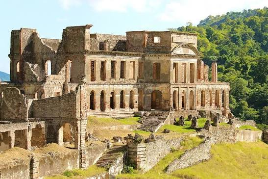
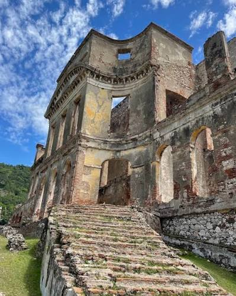
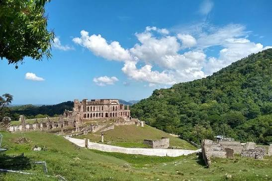
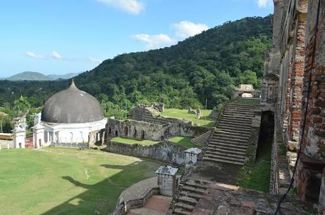
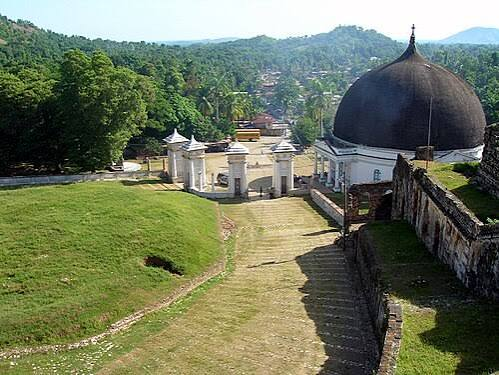

Antiga residência do rei Henri Christophe e um dos maiores símbolos da história do Haiti.

Localizado em Milot, a 20 km ao sul de Cap-Haïtien, o Palácio de Sans-Souci foi a principal residência de Henri Christophe entre 1813 e 1820.
Seu nome, que significa "sem preocupação" em francês, foi inspirado no palácio de Frederico o Grande em Potsdam.
Milot, Haiti
Palácio Histórico
1810 – 1813
Aprox. 100 metros
Construído entre 1810 e 1813, era o mais importante dos nove palácios do rei e foi projetado para rivalizar com as cortes europeias, mostrando que o Haiti independente tinha luxo e poder.
Sans-Souci tinha jardins imensos, fontes artificiais, um sistema de água complexo e salões onde ocorriam festas e bailes opulentos. Visitantes estrangeiros da época o descreveram como “um dos mais magníficos edifícios das Índias Ocidentais”.
O local era também centro de poder: após sofrer um derrame em 1820, Henri Christophe se suicidou com uma bala de prata nos jardins do palácio ao saber de uma revolta.
Um terremoto em 1842 destruiu grande parte do palácio, que nunca foi reconstruído. Mesmo em ruínas, ele faz parte do Parque Nacional Histórico declarado Patrimônio Mundial em 1982. Caminhar entre seus arcos e escadarias é ver de perto a ambição e a tragédia do primeiro e único reino do Haiti.
Localizada próxima à cidade de Milot, no norte do Haiti.




O palácio foi a principal residência do rei entre 1813 e 1820.
Seu nome foi inspirado no Palácio Sanssouci, na cidade de Potsdam, Alemanha.
As ruínas fazem parte do Patrimônio Mundial da UNESCO desde 1982.